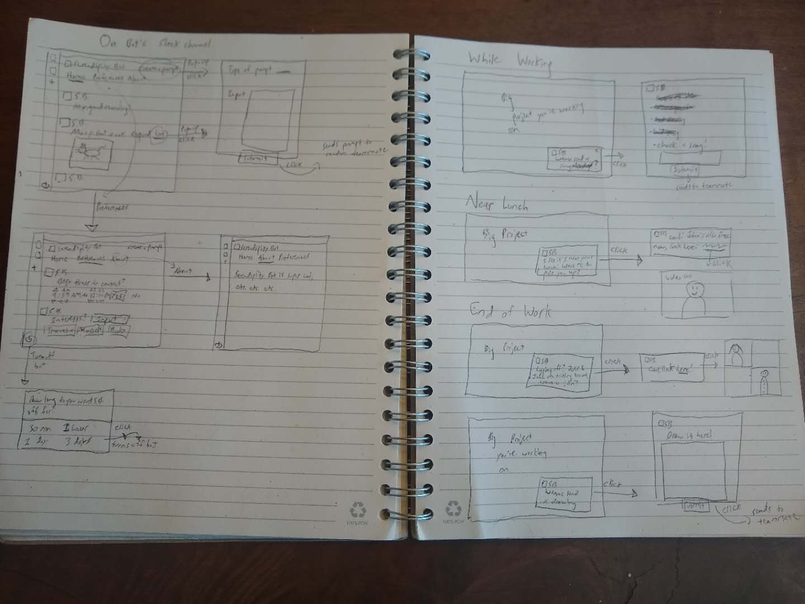
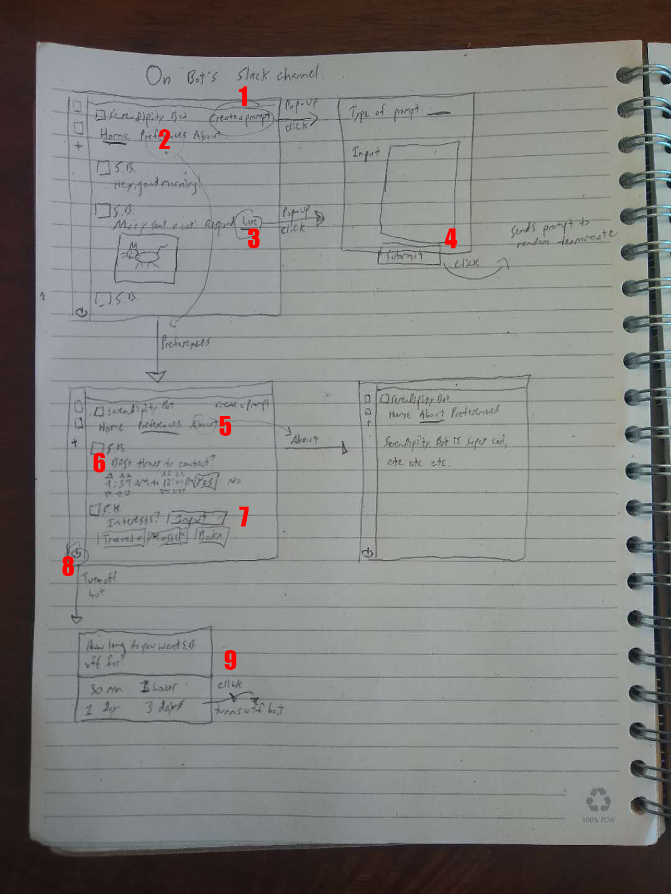
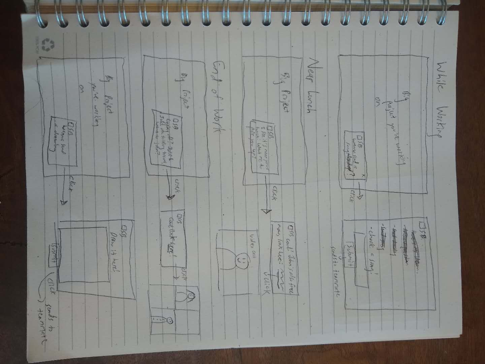

Since Serendipity bot integrates into a team's communication app, the wireframe deals with two distinct situations: going directly into Serendipity Bot's channel to change preferences, check messages or create prompts, or responding to notifications that Serendipity Bot sends you throughout the day.
  When in your team's communication app, you can navigate to the bot's homepage by finding it in the app's directory. There, you can turn the bot on and off, check your preferences, go through the prompts you've received, create a prompt yourself, or go to the about page.
1. On the upper-left, users have the option to create a prompt which they can send to a random teammate. The prompt could be to sketch something, send a song, or answer a queston.
2. Clicking this takes the user to the preferences menu.
3. This is an example of a prompt stored in Serendipity Bot's messages which a user may not have immediately responded to. They can see what their teammate sent them, and clicking gives them the option to respond.
4. When making a prompt, users can specify what type of input they're looking for (music, visual, textual) as well as the specific input, then submit to send.
5. Clicking this takes the user to the about page, which has info on the bot.
6, 7. These are examples of preferences stored by the bot. The first is the preferred times for contacting the users, the second is a list of interests the user has.
8. In the bottom left of the bot page, the user has the option to turn the bot off or on (if it's off).
9. The user can choose how long to turn the bot off for.
10. In this example, the bot prompts the user with a notification asking them to send a song to someone.
11. A new window is brought up where the user can select a song to send to their teammate.
12. In this example, the bot sends you a notification since it's near the time you specify you have lunch, asking if you'd like to have lunch with someone else.
13. If accepted, the bot pairs you up with someone else looking to have lunch, and gives you a link to hop into a video call with them.
14. It's near the end of the user's work day, and the bot tells the user that two of their teammates are talking about travel in one of the other channels. It asks if it wants to join.
15. If yes, it provides a video link for hopping into the call.
16. Here, the bot sends the user a prompt to submit a drawing.
If accepted, the user is given a space to sketch something and send it to a teammate.
Comments? Questions? Concerns? Email me here!